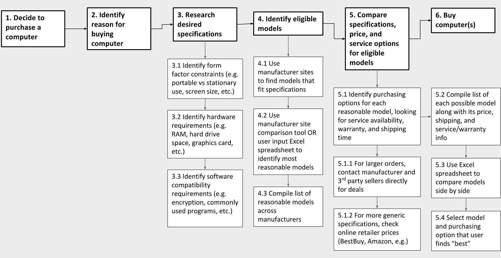
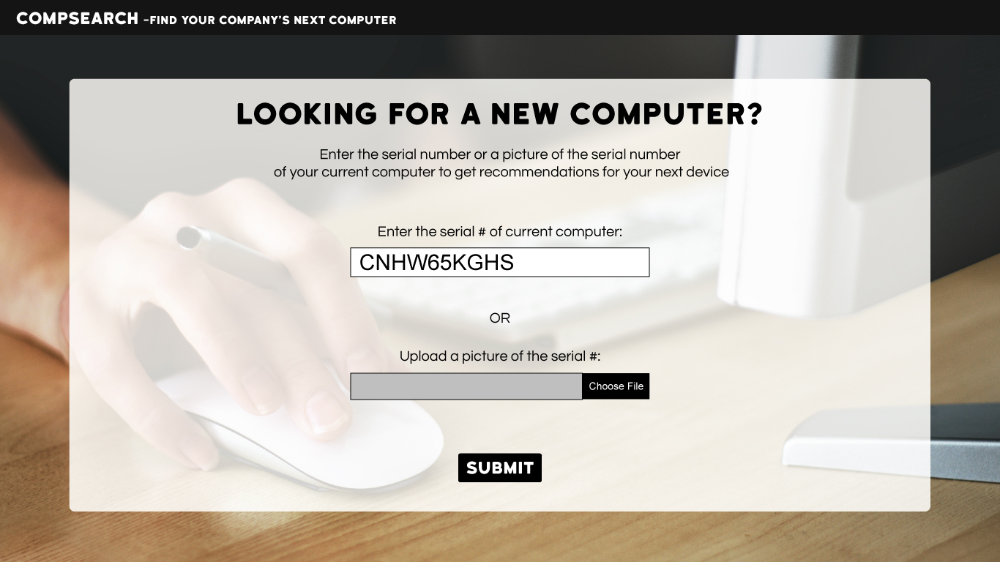
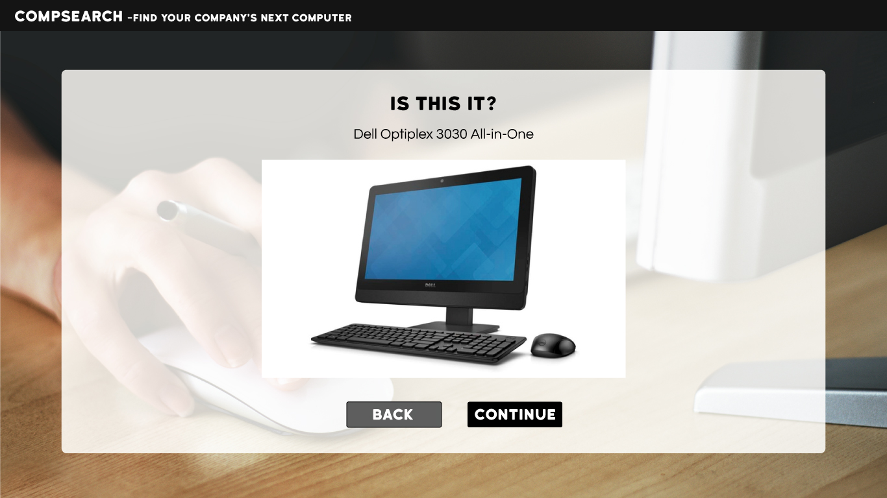
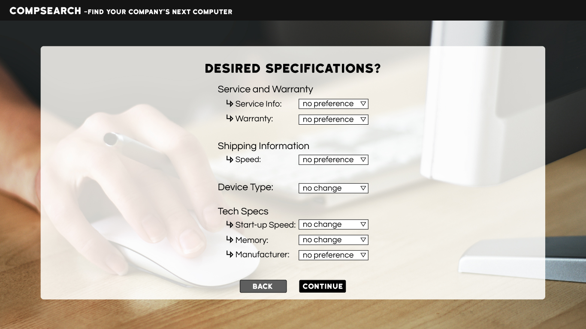
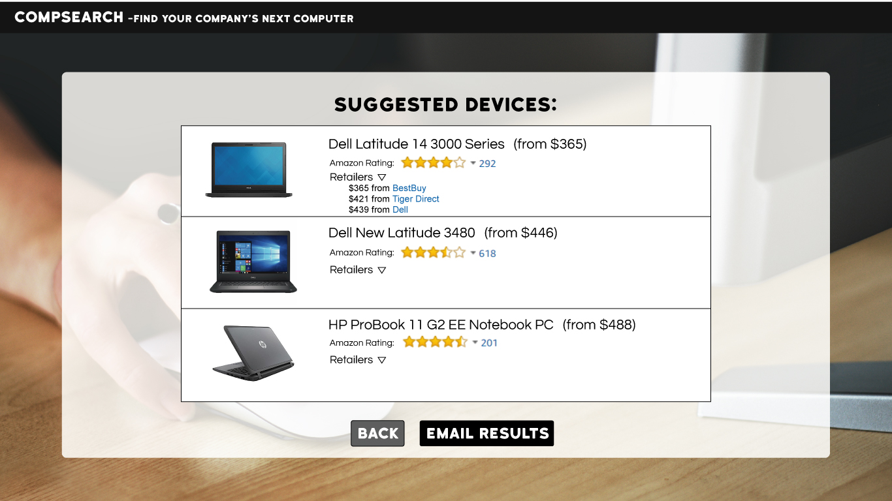

CompSearch:
Class project for "User Interface Design"Project Overview:
Computer purchasing is an expensive but neccessary endevour for many small businesses.( computers age) Because of the risk associated with this large value purchase, the process of finding the cheapest and most suitable computers for the job can take up a lot of valuable time.Initial Research/info gathering:
Task Analysis:
 Small business owners and employees were interviewed about the processes they use to buy computers for their companies.Early ideas:
Vestibulum ac bibendum ipsum. Duis lobortis urna lorem, quis faucibus justo laoreet mollis. Curabitur consequat malesuada mi ac scelerisque. Nullam nisi tortor, porttitor et ante sed, facilisis eleifend ex. Morbi lacinia nulla sit amet fringilla mollis. Cras at sollicitudin odio. Nullam tempus, turpis vitae maximus dapibus, dolor tortor dapibus sem, id consequat eros orci vitae diam. Proin mollis dolor quis sapien cursus, sit amet porta ex bibendum.Final:
CompSearch simplifies the purchase of a new PC by using the device in need of replacement as a reference. The purchaser first enters the serial number of the existing device. Then once the computer has been identified, the user is able to modify specifications they'd like to be upgraded or downgraded. Finally, the web app provides the user with a list of reccomended devices along with their pricing and links to the various stores and online merchants they can purchase them from.
1. Enter the serial # of the device to be replaced
2. Confirm device
3. Tweak specifications to fit needs
4. Review suggested devices
5. Review retailer links and prices
